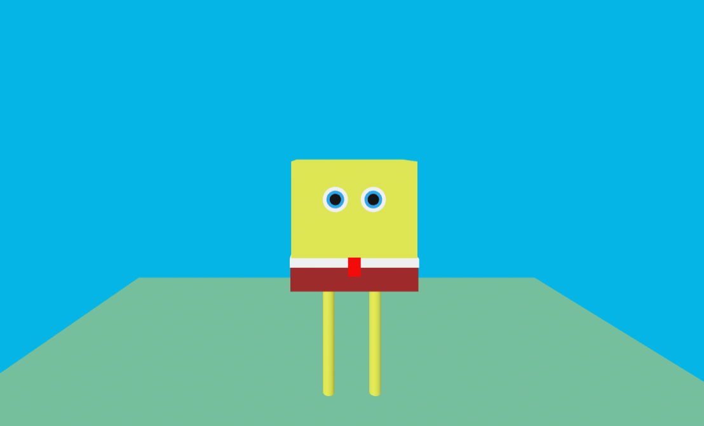

Semester Wrap Up

This might have been might my favorite as I found the VR and art part very fun. This taught me a basic of A-Frames and challenged me to think a different way.This was the second big project and of this class and I learned how to use css way better and a lot of tricks to make sure the website looks like I want it too.This was the third unit project and I learned how to use videos and give credit along with learning to use tables which are both helpful skills.The Rescue Lab assignments has been teaching me the practical uses and given me a guide that I can use to do my own projects and have been great references to go back to.